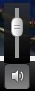

Pour jouer / pause le joueur utiliser le bouton de lecture ou de la barre d'espace. Pour avancer ou reculer rapidement utiliser la barre de gommage ou les flèches gauche et droite. Lors de la lecture d'une vidéo YouTube, vous pouvez frotter passé la vidéo en mémoire tampon en utilisant la barre de frotter ou de touches de raccourci.

Si une description audio est disponible, il peut être consulté via le bouton description sonore sur la barre d'outils vidéo.

Si les légendes sont disponibles pour la vidéo que vous regardez, il y aura un bouton sur la barre d'outils Légende vidéo.

Vous pouvez contrôler la taille du texte et la couleur de la police et des antécédents des légendes en utilisant la taille du texte de légende et légende paramètres de couleur des boutons.

Vous pouvez activer / désactiver le son avec le bouton de volume ou la touche M. Pour régler le volume, utilisez le curseur de volume ou les flèches haut et bas (touches du curseur).
Pour les utilisateurs de clavier, les touches suivantes de contrôle du lecteur vidéo.
Espace bar, Lecture / pause.
Flèche vers la gauche, Rewind.
Flèche droite, avance rapide.
Flèche haut, augmenter le volume.
Flèche vers le bas, diminuer le volume.
M, Muet.
Pour les utilisateurs de lecteur d'écran, les touches suivantes de contrôle du lecteur vidéo.
CTRL + ALT + 1, Lecture / pause.
CTRL + ALT + 2, rembobinage.
CTRL + ALT + 3, d'avance rapide.
CTRL + ALT + 4, Augmenter le volume.
CTRL + ALT + 5, Diminue le volume.
CTRL + ALT + 6, Mute.
Toutes les touches de raccourci sont répertoriés dans le panneau d'information dans le lecteur vidéo.

Vous pouvez regarder la vidéo en mode plein écran. Pour quitter le mode plein écran, vous pouvez soit appuyer sur le bouton Plein écran ou appuyez sur la touche Echap. S'il vous plaît noter, aucun contrôle autre clavier fonctionnera en mode plein écran.
Le lecteur vidéo est entièrement accessible aux lecteurs d'écran et les utilisateurs du clavier. Tous les boutons sont accessibles en utilisant l'onglet, entrez ou touches de raccourci. Toutes les commandes sont étiquetés pour les lecteurs d'écran.
Retour au joueur de